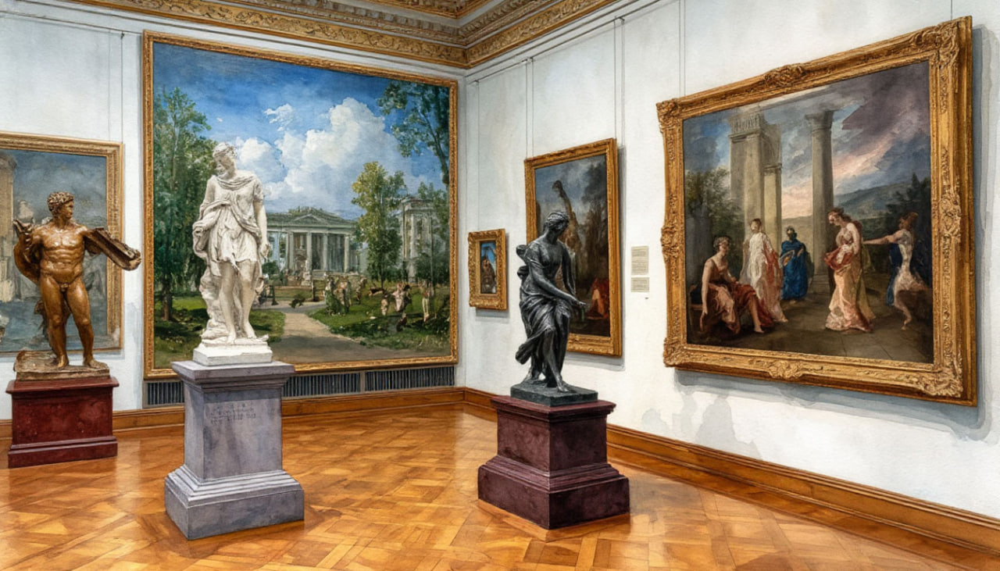

Его Императорское Величество Эрмитаж

Даты тура:
30 апреля - 4 мая
11 - 15 июня
9 - 13 июля | 23 - 27 июля
6 - 10 августа | 13 - 17 августа |
20 - 24 августа
Стоимость тура:
- 27 500 р. - взрослый
- 27 300 р. - пенсионеры/студенты/школьники
- 35 300 р./чел - одноместное размещение
По программе:
- - Обзорная экскурсия по Санкт-Петербургу
- - Территория Петропавловской крепости
- - Эрмитаж
- - Петергоф с прогулкой по Нижнему парку фонтанов (за доп.плату)
- - Царское село с Екатерининским парком
Программа тура:
1 день: Отправление
- 17-00- выезд из Костромы от ТРЦ "РИО" (ул. Магистральная, 20), правый угол от центрального входа. Ночной переезд
2 день:
- 08:00 Ориентировочное прибытие в Санкт-Петербург. Встреча с экскурсоводом.
- Завтрак в кафе города.
- Обзорная экскурсия «Ангел, хранящий Город». Знакомство с историей создания Санкт-Петербурга, осмотр архитектурных ансамблей парадного центра: стрелка Васильевского острова, Дворцовая площадь, Сенатская площадь, Исаакиевская площадь, Невский проспект, Смольный собор. Сделаем остановку на одном из самых известных маршрутов нашего города у «Древних сфинксов» на Университетской набережной.
- Экскурсия «Ангел, хранящий Город» по территории Петропавловской крепости, Нескучная прогулка по Заячьему острову. Мы войдем в крепость через парадные ворота и направимся к Петропавловскому собору.
- Обед в кафе города.
- 16:00 для желающих экскурсия в Петергоф с прогулкой по Нижнему парку. Хрустальные струи воды, бьющие в небеса, вольный ветер с залива, блеск и сияние золотых статуй – все это ждет Вас на прогулке по Нижнему парку Петергофа. Вы узнаете о владельцах роскошной приморской резиденции, раскроете загадки устройства фонтанов и «шутих», сделанных по велению Петра Великого Вы увидите Большой каскад – невероятную водную феерию с фонтанами и скульптурами. Струя самого знаменитого фонтана «Самсон» взметается на высоту семиэтажного дома. По пышности и богатству оформления Петергоф превзошел свой прототип – французский Версаль и стал самым ярким дворцовым ансамблем в Европе.
- Стоимость 2000 руб./взрослые, 1 800 руб./дети до 13 лет
- Размещение в отеле. Cвободное время
За дополнительную плату (по желанию) СТРОГО ПРИ БРОНИРОВАНИИ ТУРА:
3 день:
- Завтрак в отеле «шведский стол»
- Экскурсия на прогулочном кораблике по рекам и каналам Санкт-Петербурга - «Северная Венеция». Стоимость* - 1 500 руб./взрослые, 1 300 руб./дети до 15 лет.
- * Оплата при бронировании тура или сопровождающему группы.
- Далее...ХИТ! Экскурсия в Эрмитаж. Вы начнете с парадных залов Зимнего дворца. Почувствуете себя гостем императорской семьи, поднимаясь по главной Иорданской лестнице до величественных залов Зимнего дворца. Осмотрите образцы западноевропейского искусства, включая творения Античности. Отыщете зал со знаменитыми часами «Павлин». Познакомитесь с экспозициями Старого и Нового Эрмитажа. Увидите полотна Леонардо да Винчи и единственную в Россию скульптуру Микеланджело.
- СВОБОДНОЕ ВРЕМЯ В ЦЕНТРЕ ГОРОДА.
- 22: 30 - Ночная автобусная экскурсия подарит Вам уникальную возможность увидеть совсем другой город. Исходящий из ниоткуда серебристый свет окутает громаду Михайловского замка и сделает невесомым Смольный собор. В таинственном сумраке Вы увидите Невский проспект, Летний сад, древних египетских сфинксов и Петропавловскую крепость, загадаете желание у памятника Чижику-Пыжику. В завершение экскурсии Вас ждет уникальное зрелище - плавно раскрывающиеся крылья невских мостов - Дворцового, Троицкого, и Литейного. Успейте насладиться этим зрелищем.
- Стоимость * - 1 500 руб./взрослые, 1 300 руб./дети 15 лет.
- * Оплата при бронировании или сопровождающему на маршруте.
За дополнительную плату (по желанию):
За дополнительную плату (по желанию):
4 день:
- Завтрак в гостинице. Освобождение номеров и выход в автобус (с вещами)
- Экскурсия в Царское село «Золотой Век Екатерины».
- Царское село или г. Пушкин – один из красивейших пригородов Петербурга, который можно посетить в любое время года. По дороге Вы проедете маршрутом, которым царская семья добиралась до своей загородной резиденции. По пути увидите вестовые столбы, оставшиеся от времени их правления и юго-западный район Петербурга с его достопримечательностями.
- Экскурсия по Екатерининскому Парку. Екатерининский парк – красивейший памятник мирового садово-паркового искусства 18 – 20 вв. Вас ждет прогулка по Регулярному парку и Эрмитажной роще. Вам подарит неподражаемые наслаждения Пейзажный парк и обязательно очарует волшебный вид на озеро с его загадочными островками. Вам расскажут о Камероновой галереи, полюбуетесь Мраморным мостом, фонтаном «Девушка с кувшином» - здесь многие загадывают желание и бросают монетку в воду, чтобы оно обязательно исполнилось.
- Посещение Екатерининского дворца. Вы увидите огромный Екатерининский дворец XVIII века, который создал великий архитектор Бартоломео Растрелли. Познакомитесь с впечатляющим внутренним убранством, пройдётесь по Большому (Тронному) залу, сделаете основательную остановку в Янтарной комнате. Последняя была недавно восстановлена в полном объёме. Над реконструкцией знаменитого кабинета трудились несколько десятилетий, и теперь она выглядит ещё внушительнее, чем прежде.
- Стоимость - 1500 руб./взр., дети с 14 лет и студенты очных факультетов при наличии студенческого билета - 900 руб./чел., пенсионеры - 900 руб./чел., дети с 7 до 13 лет – 600 руб./чел., дети строго до 6 лет - бесплатно
- ВНИМАНИЕ Участники специальной военной операции, члены семьи участников специальной военной операции – посещают дворец БЕСПЛАТНО.
- Посещение дворца для желающих вместо свободного времени в парке.
- 18:00 (ориентировочно) Поздний обед в кафе города
- Отправление домой.
За дополнительную плату (по желанию) СТРОГО ПРИ БРОНИРОВАНИИ ТУРА:
5 день:
Прибытие в Кострому в первой половине дня (ориентировочно)
В стоимость тура входит:
- - проживание в гостинице*
- * Отель «River Palace» 4* (Номер реестровой записи: С782024005857).
- - проезд на автобусе
- - питание: 3 завтрака + 3 обеда
- - услуги гида-экскурсовода
- - экскурсионная программа
- - автобусное обслуживание по программе тура
Дополнительно оплачиваются (по желанию):
- - Экскурсия на прогулочном кораблике «Северная Венеция». Стоимость 1 500 руб./взрослые, 1 300 руб./дети до 15 лет. Оплата при бронировании или сопровождающему группы
- - Ночная экскурсия по городу - Стоимость 1 500 руб./взрослые, 1 300 руб./дети до 15 лет. Оплата при бронировании или сопровождающему группы
- - Посещение Екатерининского дворца СТРОГО ПРИ БРОНИРОВАНИИ ТУРА - Стоимость - 1500 руб./взрослые, дети с 14 лет и студенты очных факультетов при наличии студенческого билета - 900 руб./чел., пенсионеры - 900 руб./чел., дети с 7 до 13 лет – 600 руб./чел., дети строго до 6 лет - бесплатно.
- ВНИМАНИЕ Участники специальной военной операции, члены семьи участников специальной военной операции – посещают дворец БЕСПЛАТНО.
- - Экскурсия в Петергоф СТРОГО ПРИ БРОНИРОВАНИИ ТУРА - Стоимость - 2000 руб./взрослые, дети с 14 лет, 1 800 р./дети до 13 лет.
- Для бронирования необходимы данные паспорта РФ и свидетельства о рождении, если с вами путешествуют дети
- Предоплата – 50% от стоимости тура. Остаток за 30 дней до даты выезда.
- Любой тур можно оформить не выходя из дома. Подробнее: Тут
Стоимость тура не зафиксированы и могут быть изменены в большую или меньшую сторону в зависимости от уровня спроса в любой момент.
Время начала экскурсий и их порядок указано ориентировочно.
Фирма-исполнитель оставляет за собой право замены экскурсий без уменьшения общего объема экскурсионной программы.
По вопросам бронирования обращайтесь: